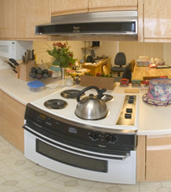
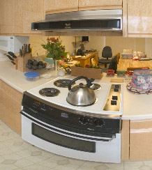
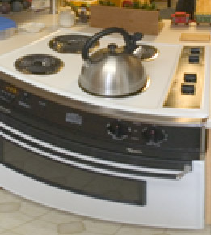

Aliasing
Definition and Background
Aliasing is a process that results in "jaggies" or Moire effects when an image is sampled or resampled.
The word "aliasing" comes from frequency-domain analysis. Slow periodic sampling of a signal causes high frequency components to be "aliased" into low frequency ones that corrupt the sampled signal.
To avoid aliasing, a signal must not contain frequencies that are higher than one half the sample rate. Likewise, an input image must not contain details that are smaller than one pixel in the output image.
This can be accomplished by appropriately filtering the signal or blurring the image before resampling it.
Such filtering is one way to anti-alias. (There are others, not relevant here.)
When using older versions of Panorama Tools[*] (and derived tools such as PTStitcher, nona or the Panorama Tools Plugins[*]) the important thing to know was that Panorama Tools did not anti-alias until pano12 version 2.7.0.11. This meant that if you had Panorama Tools make a small panorama directly, it was likely to show jaggies or Moire effects.
In version 2.7.0.11 a couple of anti-aliasing interpolators[*] where added which can be used by either specifying the correct interpolator number in the script] or by choosing one of the interpolators directly if the Software supports it. However, the traditional interpolators "poly3", "spline16", "spline36", "sinc256", "spline64", "bilinear", "nearest neighbor" and "sinc1024" still cause aliasing.
Guidance
You will get better results by having Panorama Tools make a large panorama, then resizing it (downsampling) using some tool like Photoshop[*], ImageMagick[*] or GIMP[*] that does incorporate anti-aliasing, if you use a version prior to 2.7.0.11 or if it's not possible to use the new anti-aliasing filters.
Illustrations
The following images illustrate this guidance. They show crops from a 1000x500 panorama.
On the left is what Photoshop produced by downsampling from a 6068x3034 pano, using the Image Size command with Bicubic resampling. (6068x3034 was the PTGui[*] "optimum" size.)
On the right is what old Panorama Tools produced directly at 1000x500.
Actual pixels
 
2X enlargement to show the aliasing more clearly
